Probability distributions
So far we have talked about probability of events, and we have in mind measurements and, in the Bayesian case, parameter values as the events. We have a bit of a problem, though, if the sample space consists of real numbers, which we often encounter in our experiments and modeling. The probability of getting a single real value is identically zero. This is my motivation for introducing probability distributions, but the concept is more general and has much more utility than just dealing with sample spaces containing real numbers. Importantly, probability distributions provide the link between outcomes in the sample space to probability. Probability distributions describe both discrete quantities (like integers) and continuous quantities (like real numbers).
Though we cannot assign a nonzero the probability for an outcome from a sample space containing all of the real numbers, we can assign a probability that the outcome is less than some real number. Notationally, we write this as
The function \(F(y)\), which returns a probability, is called a cumulative distribution function (CDF), or just distribution function. It contains all of the information we need to know about how probability is assigned to \(y\). A CDF for a Normal distribution is shown in the left panel of the figure below.

a) The cumulative distribution function for a Normal distribution that could describe, for example, the heights of men in centimeters in a given country. b) The corresponding probability density function.
Related to the CDF for a continuous quantity is the probability density function, or PDF. The PDF is given by the derivative of the CDF,
Note that \(f(y)\) is not the probability of outcome \(y\). Rather, the probability that of outcome \(y\) lying between \(y_0\) and \(y_1\) is
Note that with this defintion of the probability density function, satisfaction of the axiom that all probabilities sum to one (equivalently stated as \(F(y\to\infty) = 1\)) necessitates that the probability density function is normalized. That is,
Conversely, for a discrete quantity, we have a probability mass function, or PMF,
The PMF is a probability, unlike the PDF. An example of a CDF and a PMF for a discrete distribution are shown in the figure below. In this example, \(n\) is the outcome of the roll of a fair die (\(n\in\{1,2,3,4,5,6\}\)).

a) The cumulative distribution function for the outcome of a fair die roll. b) The corresponding probability mass function.
Joint and conditional distributions and Bayes’s theorem for PDFs
We have defined a CDF as \(F(x)\), that is, describing a single variable \(x\). We can have joint distributions with a CDF \(F(x,y)\), defined as
We can conversely have joint PDFs and PMFs, \(f(x, y)\), such that, for the case of continuous \(x\) and \(y\),
with integrals replaced by sums for the discrete case.
We may also have conditional distributions that have PDF \(f(x\mid y)\). This is interpreted similarly to conditional probabilities we have already seen. \(f(x\mid y)\) is the probability density function for \(x\), given \(y\). As similar relation between joint and conditional PDFs holds as in the case of joint and conditional probabilities.
That this holds is not at all obvious. One immediate issue is that we are conditioning on an event \(y\) that has zero probability. We will not carefully derive why this holds, but state it without proof.
As a consequence, Bayes’s theorem also holds for PDFs, as it does for probabilities. [1]
Change of variables formula for continuous distributions
As a last note about probability distributions, I discuss the change of variables formula. Say I have a continuous probability distribution with PDF \(f_X(x)\). I have included the subscript \(X\) to denote that this is a PDF describing the random variable \(X\). If I wish to change variables to instead get a continuous distribution in \(y=g(x)\), or \(f_Y(y) = f_Y(g(x))\), how do I get \(f_Y\)? We must enforce that the distributions be normalized;
Thus, we must have \(\left|\mathrm{d}y\,f_Y(y)\right| = \left|\mathrm{d}x\,f_x(x)\right|\). Equivalently, we have
This is the change of variables formula.
An example of change of variables
Imagine I have a random variable that is Exponentially distributed, such that
Now saw that I want to rescale \(x\) so that I instead get a distribution in \(y = a x\). Here, \(g(x) = a x\) and \(g^{-1}(y) = y/a\). So, we have
The distribution is again Exponential, but the rate has been rescaled, \(\beta \to \beta/a\). This makes sense; we have rescaled \(x\) by our change of variables, so the rate should be rescaled accordingly.
Another example of change of variables: the Log-Normal distribution
Now imagine I have a random variable that is Normally distributed and I wish to determine how \(y = \mathrm{e}^{x}\) is distributed.
Here, \(g(x) = \mathrm{e}^x\) and \(g^{-1}(y) = \ln y\). Again applying the change of variables formula,
which is indeed the PDF of the Log-Normal distribution.